Automatic Plot of Combined Multi Dist Data
Source:R/autoplot-combined-dist.R
tidy_combined_autoplot.RdThis is an auto plotting function that will take in a tidy_
distribution function and a few arguments, one being the plot type, which is
a quoted string of one of the following:
densityquantileprobablityqqmcmc
If the number of simulations exceeds 9 then the legend will not print. The plot subtitle is put together by the attributes of the table passed to the function.
Usage
tidy_combined_autoplot(
.data,
.plot_type = "density",
.line_size = 0.5,
.geom_point = FALSE,
.point_size = 1,
.geom_rug = FALSE,
.geom_smooth = FALSE,
.geom_jitter = FALSE,
.interactive = FALSE
)Arguments
- .data
The data passed in from a the function
tidy_multi_dist()- .plot_type
This is a quoted string like 'density'
- .line_size
The size param ggplot
- .geom_point
A Boolean value of TREU/FALSE, FALSE is the default. TRUE will return a plot with
ggplot2::ggeom_point()- .point_size
The point size param for ggplot
- .geom_rug
A Boolean value of TRUE/FALSE, FALSE is the default. TRUE will return the use of
ggplot2::geom_rug()- .geom_smooth
A Boolean value of TRUE/FALSE, FALSE is the default. TRUE will return the use of
ggplot2::geom_smooth()Theaesparameter of group is set to FALSE. This ensures a single smoothing band returned with SE also set to FALSE. Color is set to 'black' andlinetypeis 'dashed'.- .geom_jitter
A Boolean value of TRUE/FALSE, FALSE is the default. TRUE will return the use of
ggplot2::geom_jitter()- .interactive
A Boolean value of TRUE/FALSE, FALSE is the default. TRUE will return an interactive
plotlyplot.
Examples
combined_tbl <- tidy_combine_distributions(
tidy_normal(),
tidy_gamma(),
tidy_beta()
)
combined_tbl
#> # A tibble: 150 × 8
#> sim_number x y dx dy p q dist_type
#> <fct> <int> <dbl> <dbl> <dbl> <dbl> <dbl> <fct>
#> 1 1 1 -0.551 -3.55 0.000360 0.291 -0.551 Gaussian c(0, 1)
#> 2 1 2 -0.652 -3.39 0.000993 0.257 -0.652 Gaussian c(0, 1)
#> 3 1 3 1.24 -3.24 0.00245 0.892 1.24 Gaussian c(0, 1)
#> 4 1 4 0.791 -3.09 0.00541 0.785 0.791 Gaussian c(0, 1)
#> 5 1 5 -2.16 -2.93 0.0108 0.0156 -2.16 Gaussian c(0, 1)
#> 6 1 6 -1.79 -2.78 0.0193 0.0366 -1.79 Gaussian c(0, 1)
#> 7 1 7 -0.428 -2.63 0.0314 0.334 -0.428 Gaussian c(0, 1)
#> 8 1 8 1.10 -2.47 0.0466 0.864 1.10 Gaussian c(0, 1)
#> 9 1 9 1.69 -2.32 0.0639 0.955 1.69 Gaussian c(0, 1)
#> 10 1 10 -1.41 -2.17 0.0818 0.0793 -1.41 Gaussian c(0, 1)
#> # ℹ 140 more rows
combined_tbl |>
tidy_combined_autoplot()
 combined_tbl |>
tidy_combined_autoplot(.plot_type = "qq")

combined_tbl |>
tidy_combined_autoplot(.plot_type = "qq")
